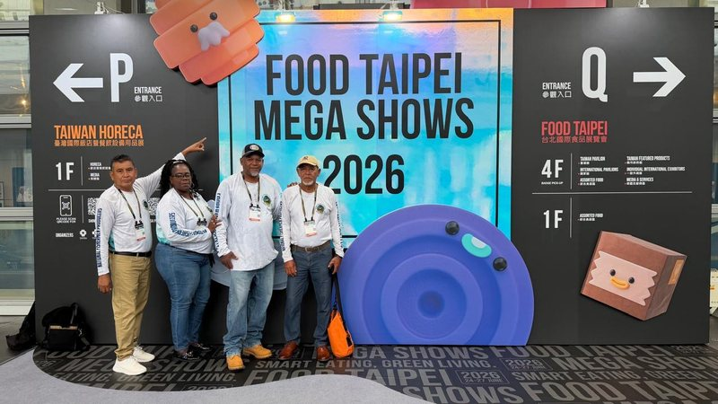

NATFISH Represents Belize at Food Taipei 2026
From June 20 to 29, 2026, a NATFISH delegation travelled to Taiwan to represent Belize and its fishing community. During the visit, National Fishermen participated as an official exhibitor at Food Taipei 2026, held from June 24 to 27, helping showcase Belizean seafood to an international audience.